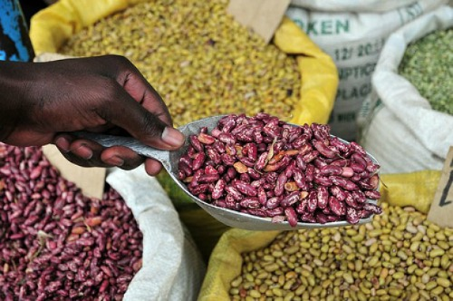

Across the globe, humble legumes of every color and size: from black turtle beans to white cannellinis, from tiny red lentils to giant cranberry beans, form the basis of classic, nourishing food enjoyed by rich and poor alike.
The bean truck is based on a simple philosophy: that healthy, tasty food can be affordable and fun! We draw on cuisines from around the world to make protein-rich, hearty soups, stews, sandwiches and more.
So, if you need a real meal, and you don't want to spend a lot of money, look for the Bean Truck on a street near you!